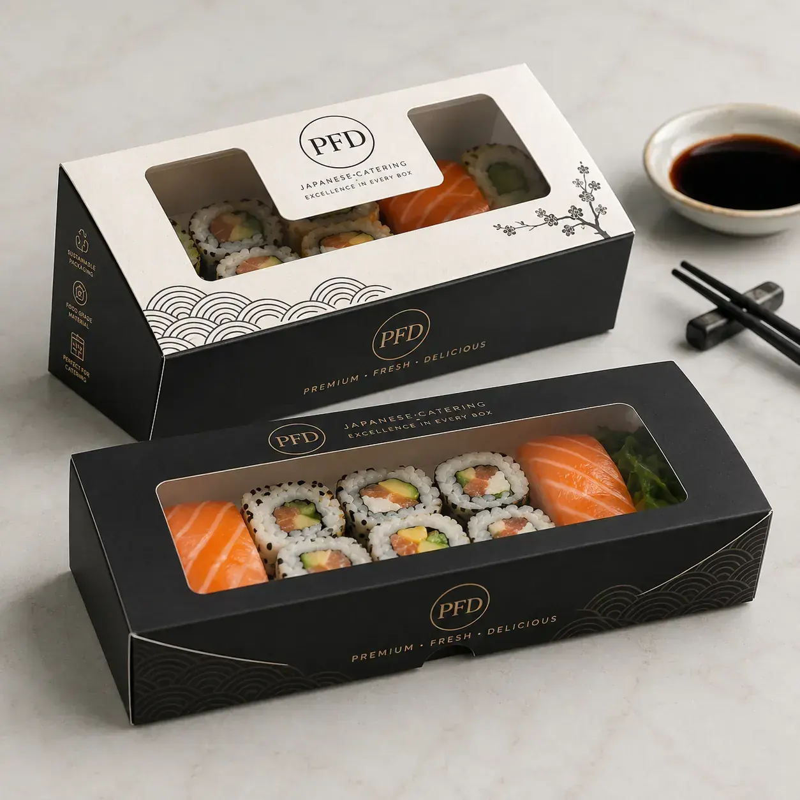

Custom sushi boxes are built for sushi restaurants, Japanese catering, supermarket sushi counters and premium takeaway brands that need clear product visibility and strong shelf appeal. These disposable paper sushi boxes can be customized with window shape, food-safe board, black or kraft exterior and premium logo printing. We support OEM size, structure recommendation, food-grade material selection, rich logo printing, barcode placement and export packaging for global B2B buyers.

Custom sushi boxes are built for sushi restaurants, Japanese catering, supermarket sushi counters and premium takeaway brands that need clear product visibility and strong shelf appeal. These disposable paper sushi boxes can be customized with window shape, food-safe board, black or kraft exterior and premium logo printing. This product is ideal for sushi restaurants, Japanese catering brands, supermarket food counters and takeaway packaging wholesalers. It supports Food-grade paperboard, kraft board, black card and optional PET window film with Clear window display, secure closure, food-safe paperboard, attractive shelf presentation and takeaway-friendly structure and Custom logo, Japanese wave pattern, gold line design, food-grade ink, barcode and QR code printing.
| MOQ | 500 PCS custom printed packaging |
|---|---|
| Material | Food-grade paperboard, kraft board, black card and optional PET window film |
| Features | Clear window display, secure closure, food-safe paperboard, attractive shelf presentation and takeaway-friendly structure |
| Printing | Custom logo, Japanese wave pattern, gold line design, food-grade ink, barcode and QR code printing |
| Applications | Sushi rolls, nigiri, sashimi sets, bento sushi, catering platters and supermarket sushi packs |
| Customization | Box size, window style, inner coating, paper thickness, print color, insert tray and carton packing |
Send product size, quantity, artwork needs, packaging structure and shipping country to Linda Wang for a fast B2B quotation.
WhatsApp Linda Email InquiryCustom Sushi Boxes Wholesale | Disposable Paper Sushi Packaging with Window for Japanese Catering targets high-intent B2B buyers searching for custom sushi boxes, sushi packaging with window, disposable paper sushi boxes, sushi takeaway packaging, Japanese catering box, sushi box wholesale manufacturer. The page uses commercial long-tail keywords, food packaging material details, customization data and RFQ-ready specifications that help both Google and AI search systems understand the product quickly.
Sushi rolls, nigiri, sashimi sets, bento sushi, catering platters and supermarket sushi packs.
We can customize dimensions, paper weight, food-contact coating, box structure, window style, insert system, logo printing, barcode or QR code placement, finish effects and export carton packing. MOQ 500 PCS. OEM/customize only.
Yes. We can customize window size, shape and film type so customers can see the sushi clearly while the box protects the food.
Yes. We can produce black, kraft or white paper sushi boxes with premium logo printing and custom visual design.
Recommended buyer brief: product type, food application, packaging size, paper or coating requirement, quantity, artwork file, target market, compliance text and shipping country. MOQ 500 PCS. OEM/customize only.
MOQ 500 PCS - Fast Factory Quote
Click below to contact us quickly by WhatsApp or email. We can help with dieline, samples, printing, materials and worldwide shipping.
Chat on WhatsAppEmail Inquirylinda@colorprintingpackage.com